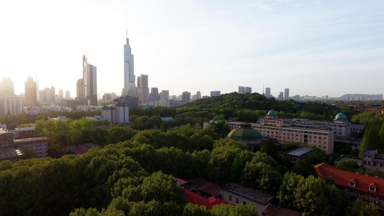
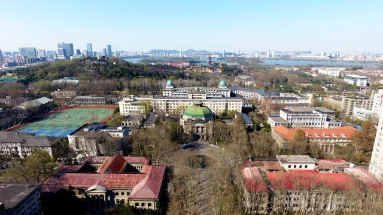
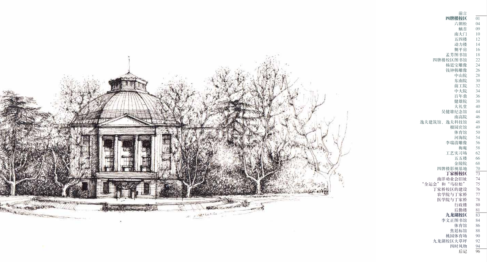
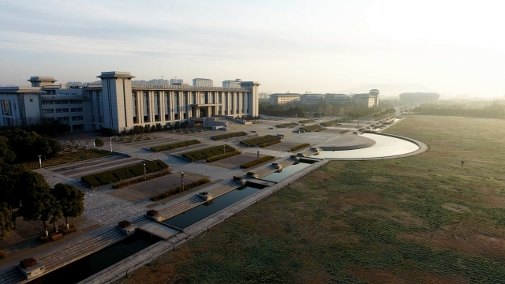
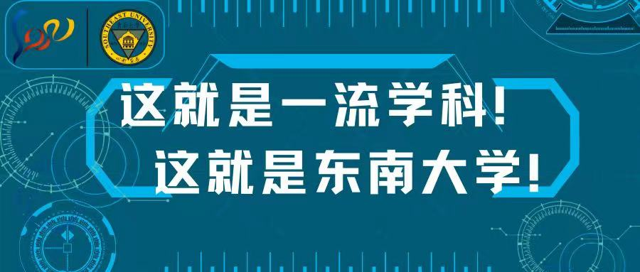
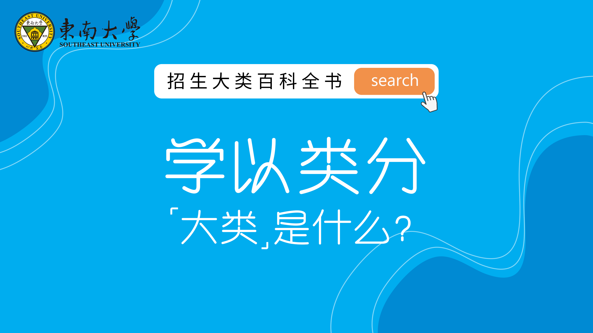
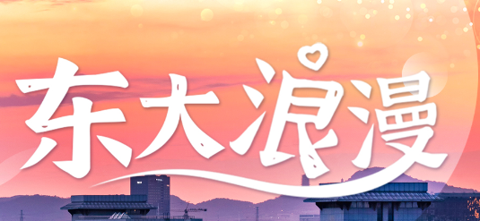

强，但不浮夸
东南大学是教育部直属、国家 985 工程和 211 工程重点建设大学之一、“双一流”建设高校。它的优势不靠热搜呈现，而藏在具体专业和长期学科传统里。
这不是“滤镜式种草”。面向复附同学，东南大学最有说服力的地方，是它把扎实学风、长三角位置、强工科底色和真实国家工程放在一起。
东南大学是教育部直属、国家 985 工程和 211 工程重点建设大学之一、“双一流”建设高校。它的优势不靠热搜呈现，而藏在具体专业和长期学科传统里。
南京离上海不远，但足够让你换一套生活半径。对上海学生来说，它不是逃离原来的资源，而是在长三角里换一个更适合沉下来的位置。
东大的气质不是单一“工科机器”。四牌楼的历史、九龙湖的现代校园、校训“止于至善”，让技术学习不只是刷题，而是和城市、社会、人的需求相连。

校园东大的气质不是只靠一句宣传语。它有四牌楼的历史，也有九龙湖的开阔，还有一种偏安静、偏扎实的理工科底色。


先看学校基本面，再看当年招生信息。选大学时，数字要能查，年份也要看清。

数字背后，是一所具体的大学。如果你在意专业强度，不要只看学校名气。把优势方向拆开看，会更接近真实选择。
机械工程、材料科学与工程、电子科学与技术、信息与通信工程、控制科学与工程、计算机科学与技术、建筑学、土木工程、交通运输工程、生物医学工程、风景园林学、艺术学理论。

学校简介中提到，科研成果嵌入深海探测、第五代/第六代移动通信、空间技术、港珠澳大桥、高铁技术、神舟系列飞船等国家重大工程。对理工科学生来说，这比抽象地说“平台大”更有画面。
下面是 2026 年招生季信息。它对今年报考有参考价值，但下一年一定要重新看招生章程和各省政策。

这类信息对志愿填报很关键，但一定要带年份看，不要把今年的招生政策当成永久不变。
2026 年本科招生新增低空技术与工程、医疗器械与装备工程、系统科学与工程。信号很明确：新工科正在往更前沿的产业现场走。
2026 年推出 AI+工程创新班，官方新闻提到机器人、能源、脑机接口、具身智能等方向。关注 AI 的同学可以把它作为重点观察项。
2026 年普通类本科批次考生，填满专业志愿且不重复、政审体检合格后，进档 100% 不调剂。这个政策要和条件一起看。
适合对空间、历史、审美和公共生活敏感的人。东大的建筑与城市相关传统，是它最鲜明的名片之一。
适合喜欢底层原理、系统工程和抽象逻辑的人。若关注 2026 年 AI+工程创新班，可重点看官方新闻中提到的机器人、能源、脑机接口、具身智能等方向。
适合愿意面对大尺度工程系统的人。桥梁、轨道、道路、材料与城市基础设施，最终都会落回真实世界的效率与安全。
适合既有理工能力，也愿意面对生命问题的人。工程方法进入医学，是未来很有张力的方向。
2026 年本科招生新增专业释放的信号很清楚：新工科不只是专业名变化，而是把产业前沿提前接进本科培养。
公开讨论里关于东大的关键词很稳定：低调、工科强、学风强、南京离上海不远。下面不装官方口吻，直接讲人话。

先问是不是：是。东大不是最会制造话题的学校，存在感有时像“开了静音的强者”。但在建筑、电子信息、计算机、交通、土木、生医等方向，它不是来凑热闹的。
知乎体翻译：别只看声量，看专业区。不远，至少不是“发配边疆”那种远。更准确地说，它让你离开上海的惯性，但还留在长三角高密度网络里。想回家、实习、看展、见朋友，都不是世界尽头。
梗点：离家出走未遂版成长。如果目标专业在东大更强，南京不是退一步，而是换一个训练场。上海给你资源密度，东大给你一套更扎实、更偏工程问题的训练。选大学不是地铁换乘，不能只看站名。
判断题：城市优先，还是专业优先？看三个东西：孩子想读的方向是不是东大的优势区，录取政策和专业分流有没有看明白，大学四年是不是能承接孩子的长期兴趣。尤其理工科，不建议只按城市热度排序。
家长版：少问“名气”，多问“匹配”。会有强度。公开讨论里“学风强”“强度不低”出现频率很高。它更适合目标感强、愿意把理工科读扎实的人；如果你想要的是躺平式大学体验，东大可能会温柔地拒绝你。
不吓人版：不是地狱模式，是别指望纯挂机。带年份，带条件，别把招生新闻讲成永久承诺。比如 2026 年普通类本科批次“进档 100% 不调剂”，就必须同时说明填满专业志愿且不重复、政审体检合格等条件。
先问是不是，再看括号里的条件。如果你正在想“专业优先还是城市优先”“要不要离开上海”“理工科到底读到哪里才算有意思”，可以用下面几条快速判断。
如果你想要的大学四年，不只是更难的课程、更卷的绩点，而是进入实验室、工作坊、城市现场、工程平台和真实问题，东大值得你亲自去看一眼。
涉及招生政策的信息，请以当年招生章程和各省正式发布为准。认真比较，本来就是选择大学的一部分。